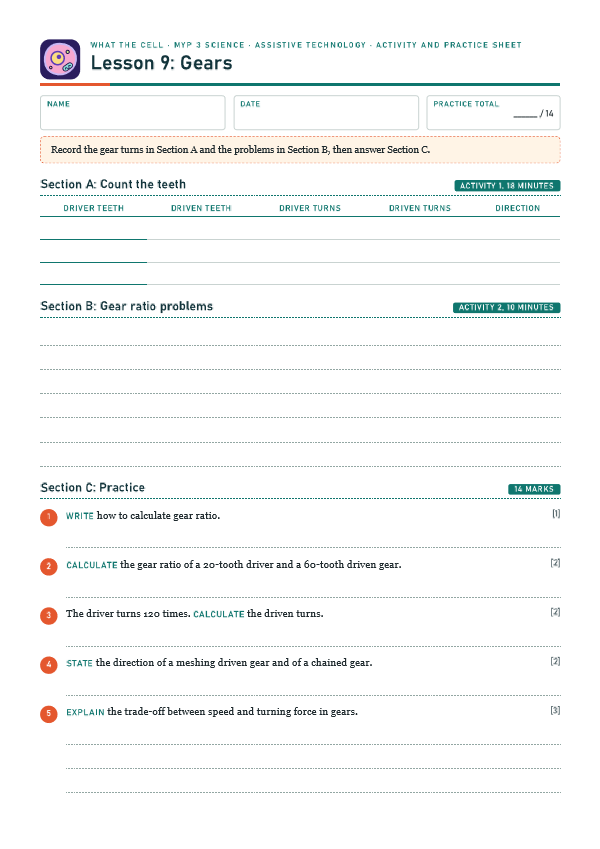

By the end of the lesson you can
- Describe how meshing gears transfer turning
- Calculate gear ratio from numbers of teeth
- Predict the speed and direction of the driven gear
- Explain the trade-off between speed and turning force
Keys: arrows or a presentation clicker move the slides, F for full screen. Slides with a red dot have a video or simulation.
Videos (all 5 minutes or less)
- 2:38
Gear Ratios Explained Simply
TA Automotive technology. While you watch: How is gear ratio found? Slide 9.
Simulations
- Lab
Print and practise

Activity and practice sheet
Used in the lesson’s activities, with practice questions. Your teacher has the answers.
Download (PDF)Lesson 9 slides
All 16 slides in one file, to read again or print. The video buttons on the slides open YouTube.
Download the slides (PDF)Revising? The Revision tab on the unit page has the unit notes and review.
Class activity pack
Everything to print for the lesson’s activities: picture cards, sorting mats, station cards with their kit lists, and the teacher’s set-up notes. Print it before class.
Download the activity pack (PDF)Notes: Gears
gear
A wheel with teeth that meshes with another. For example: in a bicycle.
driver gear
The gear that is turned by the effort. For example: the pedal gear.
driven gear
The gear that is turned by the driver. For example: the back wheel gear.
gear ratio
Teeth on driven / teeth on driver. For example: 40 / 20 = 2.
mesh
When gear teeth fit together. For example: meshing gears turn opposite ways.
chain
Links that connect two gears so they turn the same way. For example: bicycle chain.
hand-cycle
A bicycle powered by the arms, with gears for hills and flat roads. For example: used in para-cycling.
Key words
| gear | toothed wheel |
|---|---|
| driver | turned by the effort |
| driven | turned by the driver |
| gear ratio | driven teeth / driver teeth |
| mesh | teeth fit together |